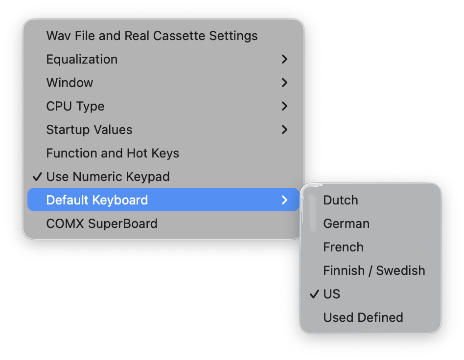
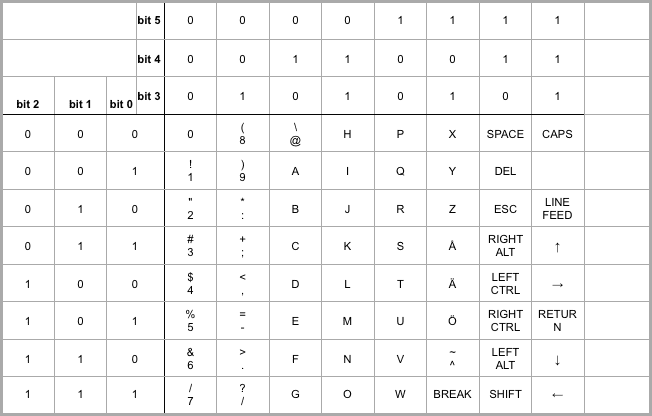

Default Keyboard
Default keyboard mapping is defined for a US keyboard layout. Several additional layouts are provided and can be selected via the menu shown below:

Currently, layouts for Dutch, German, French, Swedish/Finnish, and US are available, as well as an option to specify a user-defined layout.
If you require a specific mapping for your keyboard, please send an email with your requirements; the mapping may be included in a future release.
To create your own layout definition, locate one of the keyboard definition files in the data directory (see the Directory and File Structure section), for example us.ini. Copy this file and rename it to user_defined.ini. Modify the key values in the file as required.
The following key sets can be changed or defined for computers with a HEX keypad:
-
Keypad B, Arcade set (UP, LEFT, RIGHT, DOWN, FIRE), identified by B_A_ followed by the direction
-
Keypad A, on character mapping for keys 0-9, identified by A_C_ followed by the key number
-
Keypad A, on location mapping, identified by A_L_ followed by the key number, where 1 is the top-left corner and 16 the bottom-right corner of the keypad
-
Keypad B, on location mapping, identified by B_L_ followed by the key number, where 1 is the top-left corner and 16 the bottom-right corner of the keypad
The following key sets can be changed or defined for Studio II clones:
-
Keypad B, Arcade set (UP, LEFT, RIGHT, DOWN, FIRE), identified by B_A_ followed by the direction and _ST
-
Keypad A, on location mapping, identified by A_L_ followed by the key number and _ST, where 1 is the top-left corner and 9 the bottom-right corner of the keypad; number 10 represents key 0
-
Keypad B, on location mapping, identified by B_L_ followed by the key number and _ST, where 1 is the top-left corner and 9 the bottom-right corner of the keypad; number 10 represents key 0
-
Keypad B, on location mapping when Use Numeric Keypad is not selected, identified by B_L_NNP_ followed by the key number and _ST, where 1 is the top-left corner and 9 the bottom-right corner of the keypad; number 10 represents key 0
For the Telmac TMC-600, a subset of keys can be changed as listed under [TMC600]. Regular keys are identified by Key and shift keys by KeyShift, both followed by a 2-digit number as defined in the table below.
